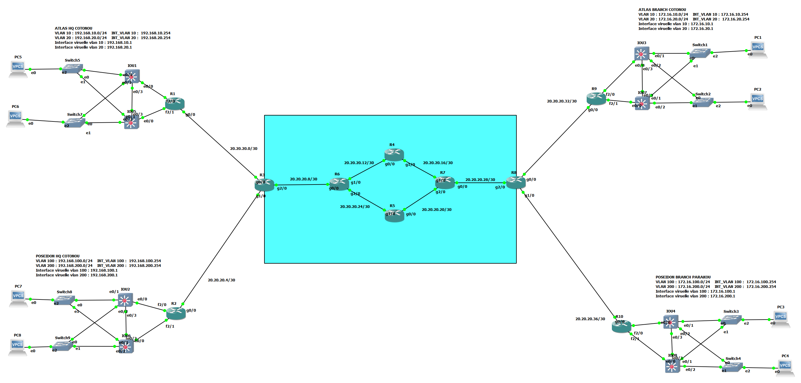

Interconnexion de sites clients par un backbone opérateur MPLS L3VPN (OSPF, LDP, VRF, MP-BGP VPNv4) avec LAN redondant HSRP
Problématique
| Contexte | Problématique | Objectif |
|---|---|---|
| Un opérateur télécom doit relier le siège et l'agence de deux entreprises clientes, ATLAS et POSEIDON, à travers une seule infrastructure partagée. Chaque client dispose de son propre réseau local segmenté en VLAN. | ✗ Deux clients partagent le même backbone : leur trafic ne doit jamais se mélanger | |
| ✗ Chaque client doit garder son plan d'adressage, sans coordination avec les autres | ||
| ✗ Des liaisons dédiées ou des tunnels point à point par site ne passent pas à l'échelle | ||
| ✗ La panne d'un lien du cœur ou d'un commutateur de site ne doit pas couper le service | ✅ Fournir un service VPN MPLS de niveau 3 (L3VPN) à deux clients isolés | |
| ✅ Isoler chaque client dans une VRF sur les routeurs de bordure de l'opérateur | ||
| ✅ Échanger les routes des clients entre les PE avec MP-BGP (VPNv4) | ||
| ✅ Transporter le trafic dans le backbone par commutation d'étiquettes (OSPF et LDP) | ||
| ✅ Garantir la redondance : double chemin dans le cœur opérateur, HSRP dans chaque LAN client |
Architecture globale
La maquette GNS3 compte 34 équipements : un backbone opérateur de six routeurs (AS 1) et quatre sites clients, le siège et l'agence de chacun des deux clients. ATLAS a son siège et son agence à Cotonou ; POSEIDON a son siège à Cotonou et son agence à Parakou.
Chaque site client comprend un routeur de bordure (CE), deux commutateurs de cœur de niveau 3 en HSRP, deux commutateurs d'accès et deux postes de test VPCS.
flowchart LR
subgraph ATLAS["Client ATLAS - VRF ATLAS"]
AHQ["atlas_HQ_WAN (CE)<br/>Siège Cotonou"]
ABR["atlas_BR_WAN (CE)<br/>Agence Cotonou"]
end
subgraph POSEIDON["Client POSEIDON - VRF POSEIDON"]
PHQ["poseidon_HQ_WAN (CE)<br/>Siège Cotonou"]
PBR["poseidon_BR_WAN (CE)<br/>Agence Parakou"]
end
subgraph ISP["Backbone opérateur AS 1 - OSPF 20 et MPLS LDP"]
PE1["ISP_PE1<br/>5.5.5.5"]
P1["ISP_P1<br/>6.6.6.6"]
P2["ISP_P2<br/>7.7.7.7"]
P4["ISP_P4<br/>9.9.9.9"]
P3["ISP_P3<br/>8.8.8.8"]
PE2["ISP_PE2<br/>10.10.10.10"]
end
AHQ ---|"20.20.20.0/30"| PE1
PHQ ---|"20.20.20.4/30"| PE1
PE1 ---|"20.20.20.8/30"| P1
P1 ---|"20.20.20.12/30"| P2
P2 ---|"20.20.20.16/30"| P3
P1 ---|"20.20.20.24/30"| P4
P4 ---|"20.20.20.20/30"| P3
P3 ---|"20.20.20.28/30"| PE2
PE2 ---|"20.20.20.32/30"| ABR
PE2 ---|"20.20.20.36/30"| PBR

Rôles dans l'architecture
| Rôle | Équipements | Fonction |
|---|---|---|
| P (Provider) | ISP_P1 à ISP_P4 |
Routeurs internes du backbone. Ils commutent les paquets sur l'étiquette MPLS et ne connaissent aucune route client |
| PE (Provider Edge) | ISP_PE1, ISP_PE2 |
Bordure du backbone. Ils portent les VRF, établissent les sessions MP-BGP et imposent les étiquettes |
| CE (Customer Edge) | atlas_HQ_WAN, atlas_BR_WAN, poseidon_HQ_WAN, poseidon_BR_WAN |
Routeur de bordure de chaque site client. Il ne connaît pas MPLS : il échange ses routes en OSPF avec le PE |
| Cœur de LAN | 8 commutateurs de niveau 3 (2 par site) | Interfaces VLAN, passerelles HSRP, routage OSPF vers le CE |
| Accès | 8 commutateurs de niveau 2 (2 par site) | Trunks 802.1Q vers les deux commutateurs de cœur, VLAN 10 et 20 |
Choix de conception
- MPLS est activé uniquement à l'intérieur du backbone, jamais sur les interfaces tournées vers les clients.
- Le cœur du backbone est sans BGP : seuls les deux PE échangent les routes des clients. Les routeurs P n'ont besoin que de l'IGP et de LDP.
- Le backbone suit une topologie en losange, avec deux chemins entre
ISP_P1etISP_P3(parISP_P2ou parISP_P4). - Chaque client a sa propre VRF, son RD et son RT. Chaque client a aussi son propre processus OSPF côté CE (processus 1 pour ATLAS, processus 2 pour POSEIDON).
- L'IGP du backbone est un processus OSPF distinct (processus 20), activé directement sur les interfaces.
- Les sessions BGP s'appuient sur les loopbacks des PE, ce qui les rend indépendantes d'un lien physique.
Plan d'adressage
Backbone opérateur
Chaque routeur du backbone porte une loopback /32, utilisée pour l'identité LDP, les sessions BGP et l'IGP.
| Équipement | Rôle | Loopback0 |
|---|---|---|
ISP_PE1 |
PE | 5.5.5.5/32 |
ISP_P1 |
P | 6.6.6.6/32 |
ISP_P2 |
P | 7.7.7.7/32 |
ISP_P3 |
P | 8.8.8.8/32 |
ISP_P4 |
P | 9.9.9.9/32 |
ISP_PE2 |
PE | 10.10.10.10/32 |
Les liaisons du backbone sont des liens point à point en /30 :
| Liaison | Réseau | Adresses |
|---|---|---|
ISP_PE1 g2/0 ↔ ISP_P1 g0/0 |
20.20.20.8/30 |
.9 et .10 |
ISP_P1 g1/0 ↔ ISP_P2 g0/0 |
20.20.20.12/30 |
.13 et .14 |
ISP_P2 g1/0 ↔ ISP_P3 g1/0 |
20.20.20.16/30 |
.17 et .18 |
ISP_P4 g0/0 ↔ ISP_P3 g2/0 |
20.20.20.20/30 |
.22 et .21 |
ISP_P1 g2/0 ↔ ISP_P4 g1/0 |
20.20.20.24/30 |
.25 et .26 |
ISP_P3 g0/0 ↔ ISP_PE2 g2/0 |
20.20.20.28/30 |
.30 et .29 |
Liaisons PE–CE (placées dans les VRF)
| Client et site | Liaison | Réseau | Côté PE (VRF) | Côté CE |
|---|---|---|---|---|
| ATLAS siège Cotonou | ISP_PE1 g0/0 ↔ atlas_HQ_WAN g0/0 |
20.20.20.0/30 |
.2 (ATLAS) |
.1 |
| POSEIDON siège Cotonou | ISP_PE1 g1/0 ↔ poseidon_HQ_WAN g0/0 |
20.20.20.4/30 |
.6 (POSEIDON) |
.5 |
| ATLAS agence Cotonou | ISP_PE2 g0/0 ↔ atlas_BR_WAN g0/0 |
20.20.20.32/30 |
.34 (ATLAS) |
.33 |
| POSEIDON agence Parakou | ISP_PE2 g1/0 ↔ poseidon_BR_WAN g0/0 |
20.20.20.36/30 |
.38 (POSEIDON) |
.37 |
Réseaux locaux des sites clients
Chaque site porte deux VLAN : 10 (IT) et 20 (DRH). Les deux commutateurs de cœur partagent une passerelle virtuelle .1 par VLAN (HSRP), leurs adresses réelles étant .254 (cœur 1) et .253 (cœur 2).
| Site | VLAN | Nom | Réseau | Passerelle virtuelle (HSRP) |
|---|---|---|---|---|
| ATLAS siège Cotonou | 10 | IT | 192.168.10.0/24 |
192.168.10.1 |
| ATLAS siège Cotonou | 20 | DRH | 192.168.20.0/24 |
192.168.20.1 |
| ATLAS agence Cotonou | 10 | IT | 172.16.10.0/24 |
172.16.10.1 |
| ATLAS agence Cotonou | 20 | DRH | 172.16.20.0/24 |
172.16.20.1 |
| POSEIDON siège Cotonou | 10 | IT | 192.168.100.0/24 |
192.168.100.1 |
| POSEIDON siège Cotonou | 20 | DRH | 192.168.200.0/24 |
192.168.200.1 |
| POSEIDON agence Parakou | 10 | IT | 172.16.100.0/24 |
172.16.100.1 |
| POSEIDON agence Parakou | 20 | DRH | 172.16.200.0/24 |
172.16.200.1 |
Chaque commutateur de cœur est relié au CE de son site par un lien routé en /30 (cœur 1 vers f2/0, cœur 2 vers f2/1). Le CE porte aussi une loopback.
| Site | Cœur 1 ↔ CE f2/0 | Cœur 2 ↔ CE f2/1 | Loopback du CE |
|---|---|---|---|
| ATLAS siège | 192.168.1.0/30 (cœur .1, CE .2) |
192.168.2.0/30 (cœur .1, CE .2) |
1.1.1.1/32 |
| ATLAS agence | 172.16.1.0/30 (cœur .1, CE .2) |
172.16.2.0/30 (cœur .1, CE .2) |
2.2.2.2/32 |
| POSEIDON siège | 192.168.3.0/30 (cœur .1, CE .2) |
192.168.4.0/30 (cœur .1, CE .2) |
3.3.3.3/32 |
| POSEIDON agence | 172.16.3.0/30 (cœur .1, CE .2) |
172.16.4.0/30 (cœur .1, CE .2) |
4.4.4.4/32 |
Démarche de mise en œuvre
Les LAN clients sont préparés en amont (VLAN, HSRP, OSPF jusqu'au CE). Le service VPN est ensuite construit en sept étapes, dans cet ordre :
- OSPF (processus 20, aire 0) entre les routeurs du backbone, pour la joignabilité des loopbacks.
- Découverte des voisins et distribution des étiquettes avec LDP (
mpls ip), uniquement sur les interfaces du backbone. - Authentification MD5 des sessions LDP.
- Création des VRF sur les PE (RD et RT), puis rattachement des interfaces tournées vers les clients.
- Routage PE–CE : OSPF dans chaque VRF.
- MP-BGP VPNv4 entre les loopbacks des deux PE.
- Redistribution mutuelle OSPF ↔ BGP dans chaque VRF.
Chaque étape est validée avant de passer à la suivante, de la couche transport vers le service client.
Backbone opérateur
OSPF : l'IGP du backbone
Tous les routeurs du backbone activent OSPF (processus 20, aire 0) directement sur leurs interfaces, loopback comprise, en mode point à point. Les interfaces PE–CE ne participent pas à cet IGP : elles appartiennent aux VRF. L'IGP sert à une seule chose : rendre joignables les loopbacks, qui sont les identités LDP et les extrémités des sessions BGP.
Extrait de ISP_P1 :
interface Loopback0
ip address 6.6.6.6 255.255.255.255
ip ospf 20 area 0
ip ospf network point-to-point
!
interface GigabitEthernet0/0
ip address 20.20.20.10 255.255.255.252
ip ospf 20 area 0
ip ospf network point-to-point
MPLS et LDP
La commande mpls ip est posée uniquement sur les interfaces entre routeurs du backbone, jamais vers les abonnés. LDP distribue alors une étiquette par préfixe de l'IGP. Chaque session LDP est protégée par une authentification MD5, déclarée voisin par voisin.
Extrait de ISP_P1, qui a trois voisins LDP (ISP_PE1, ISP_P2 et ISP_P4) :
interface GigabitEthernet0/0
mpls ip
interface GigabitEthernet1/0
mpls ip
interface GigabitEthernet2/0
mpls ip
!
mpls ldp neighbor 20.20.20.9 password <MOT_DE_PASSE>
mpls ldp neighbor 20.20.20.14 password <MOT_DE_PASSE>
mpls ldp neighbor 20.20.20.26 password <MOT_DE_PASSE>
Service VPN sur les routeurs PE
VRF : une table de routage par client
Les VRF se créent sur les PE. Elles séparent le trafic des clients et leur permettent d'avoir des plans d'adressage indépendants. Chaque VRF a un RD (qui rend les préfixes uniques dans BGP) et un RT (qui décide quelles routes sont exportées et importées).
| VRF | RD | Route-target (import et export) | Interface sur ISP_PE1 |
Interface sur ISP_PE2 |
|---|---|---|---|---|
ATLAS |
111:111 |
111:111 |
g0/0 | g0/0 |
POSEIDON |
222:222 |
222:222 |
g1/0 | g1/0 |
Extrait de ISP_PE1 :
ip vrf ATLAS
rd 111:111
route-target both 111:111
!
interface GigabitEthernet0/0
ip vrf forwarding ATLAS
ip address 20.20.20.2 255.255.255.252
Les tests de connectivité depuis un PE se font dans la VRF avec ping vrf ATLAS <adresse>.
Routage PE–CE : OSPF dans chaque VRF
Le PE parle OSPF avec chaque CE, dans le contexte de la VRF correspondante. Côté CE, c'est un OSPF ordinaire en aire 0 : le client n'a rien à savoir de MPLS.
router ospf 1 vrf ATLAS
network 20.20.20.0 0.0.0.3 area 0
!
router ospf 2 vrf POSEIDON
network 20.20.20.4 0.0.0.3 area 0
MP-BGP VPNv4 entre les PE
Les deux PE sont voisins iBGP (AS 1), via leurs loopbacks. La famille d'adresses vpnv4 transporte les préfixes clients avec leur RD, leur RT et une étiquette VPN. send-community both est indispensable : sans les communautés étendues, les RT ne voyagent pas et aucune route n'est importée côté distant.
Extrait de ISP_PE1 :
router bgp 1
neighbor 10.10.10.10 remote-as 1
neighbor 10.10.10.10 update-source Loopback0
address-family vpnv4
neighbor 10.10.10.10 activate
neighbor 10.10.10.10 send-community both
Redistribution OSPF ↔ BGP
Dans chaque VRF, les routes apprises du CE en OSPF sont injectées dans BGP, et les routes apprises des autres sites par BGP sont réinjectées en OSPF vers le CE.
router bgp 1
address-family ipv4 vrf ATLAS
redistribute ospf 1 metric 10
address-family ipv4 vrf POSEIDON
redistribute ospf 2 metric 10
!
router ospf 1 vrf ATLAS
redistribute bgp 1 metric 10
router ospf 2 vrf POSEIDON
redistribute bgp 1 metric 10
Comment une route et un paquet traversent le backbone
Plan de contrôle : la route
Exemple avec le réseau 192.168.10.0/24 du siège ATLAS, qui doit devenir joignable depuis l'agence :
flowchart LR
A["Siège ATLAS<br/>annonce 192.168.10.0/24 en OSPF 1"] --> B["ISP_PE1 - VRF ATLAS<br/>route apprise via ospf 1 vrf"]
B --> C["BGP ipv4 vrf ATLAS<br/>redistribute ospf 1"]
C --> D["Préfixe VPNv4<br/>RD 111:111 et RT 111:111<br/>plus étiquette VPN"]
D -->|"iBGP 5.5.5.5 vers 10.10.10.10"| E["ISP_PE2<br/>import du RT 111:111 dans la VRF ATLAS"]
E --> F["router ospf 1 vrf ATLAS<br/>redistribute bgp 1"]
F --> G["Agence ATLAS<br/>apprend la route en OSPF"]
Plan de données : le paquet
À l'entrée du backbone, ISP_PE1 empile deux étiquettes sur le paquet du client :
- une étiquette interne (VPN), annoncée par MP-BGP, qui indique à
ISP_PE2dans quelle VRF livrer le paquet ; - une étiquette externe (transport), distribuée par LDP, qui mène à la loopback de
ISP_PE2.
Les routeurs P ne regardent que l'étiquette externe, sans jamais consulter l'adresse IP du client. L'avant-dernier routeur (ISP_P3) retire l'étiquette externe, et ISP_PE2 utilise l'étiquette VPN pour choisir la VRF et remettre le paquet au CE de l'agence.
Réseaux locaux des sites clients
Conception
Chaque site client suit la même conception :
- Accès : deux commutateurs de niveau 2, chacun relié aux deux commutateurs de cœur par des trunks 802.1Q (
e0/0ete0/1) autorisant les VLAN 10 et 20. - Cœur : deux commutateurs de niveau 3 portant les interfaces VLAN, reliés entre eux par un trunk (
e0/3) et reliés au CE par un lien routé (e0/0). - Bordure : un routeur CE relié aux deux commutateurs de cœur (
f2/0etf2/1), qui parle OSPF avec le PE.
Les configurations de base de tous les équipements incluent le nom d'hôte, un mot de passe privilégié chiffré, l'accès console protégé et service password-encryption.
Redondance des passerelles (HSRP)
Les deux commutateurs de cœur d'un site se partagent une passerelle virtuelle .1 par VLAN grâce à HSRP, avec preempt activé. Les rôles sont répartis VLAN par VLAN (priorité 110 pour l'actif, 100 pour le secours) : chaque commutateur est actif pour un VLAN et en secours pour l'autre, ce qui répartit la charge au lieu de laisser un commutateur au repos. Ce schéma est identique sur les quatre sites.
| Site | VLAN | Passerelle virtuelle | Actif (priorité 110) | Secours (priorité 100) |
|---|---|---|---|---|
| ATLAS siège | 10 IT | 192.168.10.1 |
atlas_HQ_core_sw_1 |
atlas_HQ_core_sw_2 |
| ATLAS siège | 20 DRH | 192.168.20.1 |
atlas_HQ_core_sw_2 |
atlas_HQ_core_sw_1 |
| ATLAS agence | 10 IT | 172.16.10.1 |
atlas_BR_core_sw_1 |
atlas_BR_core_sw_2 |
| ATLAS agence | 20 DRH | 172.16.20.1 |
atlas_BR_core_sw_2 |
atlas_BR_core_sw_1 |
| POSEIDON siège | 10 IT | 192.168.100.1 |
poseidon_HQ_core_sw_1 |
poseidon_HQ_core_sw_2 |
| POSEIDON siège | 20 DRH | 192.168.200.1 |
poseidon_HQ_core_sw_2 |
poseidon_HQ_core_sw_1 |
| POSEIDON agence | 10 IT | 172.16.100.1 |
poseidon_BR_core_sw_1 |
poseidon_BR_core_sw_2 |
| POSEIDON agence | 20 DRH | 172.16.200.1 |
poseidon_BR_core_sw_2 |
poseidon_BR_core_sw_1 |
Exemple de configuration (VLAN 10 sur atlas_HQ_core_sw_1) :
interface Vlan10
ip address 192.168.10.254 255.255.255.0
standby 10 ip 192.168.10.1
standby 10 priority 110
standby 10 preempt
Routage OSPF dans les LAN
Chaque site exécute OSPF en aire 0 : processus 1 pour ATLAS, processus 2 pour POSEIDON. Sur les commutateurs de cœur, passive-interface default empêche toute adjacence sur les interfaces VLAN. Seuls le lien vers le CE (e0/0) et le lien inter-cœur (e0/3) restent actifs, en mode point à point. Les commutateurs de cœur annoncent les réseaux des VLAN, et le CE les remonte au PE.
router ospf 1
network 192.168.10.0 0.0.0.255 area 0
network 192.168.20.0 0.0.0.255 area 0
network 192.168.1.0 0.0.0.3 area 0
passive-interface default
no passive-interface Ethernet0/0
no passive-interface Ethernet0/3
Validation
La validation suit l'ordre de construction du lab, de la couche transport vers le service client. Pour chaque contrôle, la commande et le résultat attendu sont indiqués.
1. Voisinages OSPF du backbone
show ip ospf neighbor
show ip route ospf
Résultat attendu : sur ISP_P1, trois voisins à l'état FULL (ISP_PE1, ISP_P2, ISP_P4) ; sur ISP_PE1, les loopbacks de tous les autres routeurs du backbone sont présentes dans la table de routage.
2. Sessions LDP et table de commutation
show mpls interfaces
show mpls ldp neighbor
show mpls forwarding-table
Résultat attendu : une session LDP par lien du backbone, établie avec l'authentification, et une étiquette locale et sortante pour chaque loopback.
3. VRF et voisinage PE–CE
show ip vrf
show ip vrf interfaces
show ip ospf neighbor
Résultat attendu : les VRF ATLAS et POSEIDON existent sur chaque PE avec leur RD et leur interface, et le CE est voisin OSPF du PE à l'état FULL.
4. Sessions MP-BGP et routes VPNv4
show bgp vpnv4 unicast all summary
show bgp vpnv4 unicast all
Résultat attendu : la session avec la loopback de l'autre PE est établie, et les préfixes des sites distants apparaissent avec leur RD (111:111 ou 222:222).
5. Table de routage dans la VRF
show ip route vrf ATLAS
show ip route vrf POSEIDON
Résultat attendu : chaque VRF contient les réseaux de son client au siège et à l'agence, et uniquement les siens.
6. Connectivité de bout en bout
Ping entre un poste du siège et un poste de l'agence du même client, puis traceroute depuis le CE du siège vers un réseau de l'agence.
ping <adresse du poste de l'agence>
traceroute <adresse d'un réseau de l'agence>
Résultat attendu : le ping réussit pour les deux clients, et le traceroute montre la traversée du backbone avec les étiquettes MPLS.
7. Isolation entre les clients
Ping d'un poste ATLAS vers un poste POSEIDON.
Résultat attendu : échec. Les deux clients sont dans des VRF distinctes avec des route-targets différents, donc aucune route ne fuit de l'un vers l'autre.
8. Scénarios de résilience
- Panne dans le cœur opérateur : arrêt d'une interface entre
ISP_P1etISP_P2pendant un ping continu. Résultat attendu : le trafic bascule parISP_P4avec une perte limitée à quelques paquets. - Panne d'un commutateur de cœur de site : arrêt du commutateur actif d'un VLAN. Résultat attendu : le second commutateur devient Active (
show standby brief) et les postes gardent leur passerelle.1.
Points d'attention techniques
- MPLS et LDP restent à l'intérieur du backbone : les interfaces vers les clients n'activent jamais
mpls ip. - L'application de
ip vrf forwardingsur une interface efface son adresse IP, qui doit être reconfigurée juste après. - Dans une VRF,
pingettraceroutedepuis un PE exigent le mot-clévrfpour utiliser la bonne table de routage. - Les sessions BGP et LDP s'appuient sur les loopbacks : elles ne s'établissent que si l'IGP les rend joignables.
send-community bothest nécessaire pour que les route-targets traversent MP-BGP.- Les identifiants de processus OSPF des VRF (1 et 2 sur les PE) sont locaux à l'équipement et distincts du processus 20 de l'IGP du backbone.
Compétences démontrées
- Conception d'un réseau opérateur avec séparation des rôles P, PE et CE.
- Mise en œuvre de MPLS avec LDP et authentification MD5 des sessions.
- Création de VPN MPLS de niveau 3 : VRF, RD et route-targets, isolation des clients.
- Configuration de MP-BGP (VPNv4) entre PE, via les loopbacks, avec échange de communautés étendues.
- Routage OSPF multi-processus et dans les VRF, avec redistribution mutuelle OSPF ↔ BGP.
- Compréhension des plans de contrôle et de données d'un L3VPN : étiquette VPN, étiquette de transport, avant-dernier saut.
- Conception de LAN redondants : VLAN, trunks 802.1Q, HSRP avec répartition de charge par VLAN, routage OSPF avec interfaces passives.
- Élaboration d'un plan d'adressage cohérent sur quatre sites et un backbone de six routeurs.
- Construction méthodique d'un laboratoire de 34 équipements, validé couche par couche.
Perspectives d'évolution
- Remplacer les deux PE en maillage direct par un route-reflector, pour faire passer le nombre de sites à l'échelle.
- Ajouter de l'ingénierie de trafic MPLS (TE) et la protection rapide de liens (FRR).
- Appliquer de la QoS (marquage et files d'attente) pour prioriser la voix.
- Donner aux clients un accès Internet ou à des services partagés via un VRF commun (extranet).
- Accélérer la détection de pannes avec BFD.
- Remplacer les CE par des pare-feu FortiGate et comparer ce modèle avec le VPN chiffré du projet Interconnexion de deux sites d'entreprise par VPN IPsec IKEv2 site-à-site (FortiGate) avec réseau LAN redondant HSRP et routage OSPF.
Annexes : configurations
Les mots de passe sont remplacés par des marqueurs. Les équipements non listés suivent le même modèle, aux adresses près.
-
ISP_PE1 (PE, côté siège)
hostname ISP_PE1 ! ip vrf ATLAS rd 111:111 route-target both 111:111 ip vrf POSEIDON rd 222:222 route-target both 222:222 ! interface Loopback0 ip address 5.5.5.5 255.255.255.255 ip ospf 20 area 0 ip ospf network point-to-point ! vers ISP_P1 interface GigabitEthernet2/0 ip address 20.20.20.9 255.255.255.252 ip ospf 20 area 0 ip ospf network point-to-point mpls ip ! vers atlas_HQ_WAN interface GigabitEthernet0/0 ip vrf forwarding ATLAS ip address 20.20.20.2 255.255.255.252 ! vers poseidon_HQ_WAN interface GigabitEthernet1/0 ip vrf forwarding POSEIDON ip address 20.20.20.6 255.255.255.252 ! mpls ldp neighbor 20.20.20.10 password <MOT_DE_PASSE> ! router ospf 1 vrf ATLAS network 20.20.20.0 0.0.0.3 area 0 redistribute bgp 1 metric 10 router ospf 2 vrf POSEIDON network 20.20.20.4 0.0.0.3 area 0 redistribute bgp 1 metric 10 ! router bgp 1 neighbor 10.10.10.10 remote-as 1 neighbor 10.10.10.10 update-source Loopback0 address-family vpnv4 neighbor 10.10.10.10 activate neighbor 10.10.10.10 send-community both exit-address-family address-family ipv4 vrf ATLAS redistribute ospf 1 metric 10 exit-address-family address-family ipv4 vrf POSEIDON redistribute ospf 2 metric 10 exit-address-family -
ISP_PE2 (PE, côté agences)
hostname ISP_PE2 ! ip vrf ATLAS rd 111:111 route-target both 111:111 ip vrf POSEIDON rd 222:222 route-target both 222:222 ! interface Loopback0 ip address 10.10.10.10 255.255.255.255 ip ospf 20 area 0 ip ospf network point-to-point ! vers ISP_P3 interface GigabitEthernet2/0 ip address 20.20.20.29 255.255.255.252 ip ospf 20 area 0 ip ospf network point-to-point mpls ip ! vers atlas_BR_WAN interface GigabitEthernet0/0 ip vrf forwarding ATLAS ip address 20.20.20.34 255.255.255.252 ! vers poseidon_BR_WAN interface GigabitEthernet1/0 ip vrf forwarding POSEIDON ip address 20.20.20.38 255.255.255.252 ! mpls ldp neighbor 20.20.20.30 password <MOT_DE_PASSE> ! router ospf 1 vrf ATLAS network 20.20.20.32 0.0.0.3 area 0 redistribute bgp 1 metric 10 router ospf 2 vrf POSEIDON network 20.20.20.36 0.0.0.3 area 0 redistribute bgp 1 metric 10 ! router bgp 1 neighbor 5.5.5.5 remote-as 1 neighbor 5.5.5.5 update-source Loopback0 address-family vpnv4 neighbor 5.5.5.5 activate neighbor 5.5.5.5 send-community both exit-address-family address-family ipv4 vrf ATLAS redistribute ospf 1 metric 10 exit-address-family address-family ipv4 vrf POSEIDON redistribute ospf 2 exit-address-family -
ISP_P1 (routeur P, point de jonction du losange)
hostname ISP_P1 ! interface Loopback0 ip address 6.6.6.6 255.255.255.255 ip ospf 20 area 0 ip ospf network point-to-point ! vers ISP_PE1 interface GigabitEthernet0/0 ip address 20.20.20.10 255.255.255.252 ip ospf 20 area 0 ip ospf network point-to-point mpls ip ! vers ISP_P2 interface GigabitEthernet1/0 ip address 20.20.20.13 255.255.255.252 ip ospf 20 area 0 ip ospf network point-to-point mpls ip ! vers ISP_P4 interface GigabitEthernet2/0 ip address 20.20.20.25 255.255.255.252 ip ospf 20 area 0 ip ospf network point-to-point mpls ip ! mpls ldp neighbor 20.20.20.9 password <MOT_DE_PASSE> mpls ldp neighbor 20.20.20.14 password <MOT_DE_PASSE> mpls ldp neighbor 20.20.20.26 password <MOT_DE_PASSE> -
atlas_HQ_WAN (CE du siège ATLAS)
hostname atlas_HQ_WAN ! interface Loopback0 ip address 1.1.1.1 255.255.255.255 ! vers ISP_PE1 interface GigabitEthernet0/0 ip address 20.20.20.1 255.255.255.252 ! vers atlas_HQ_core_sw_1 interface FastEthernet2/0 ip address 192.168.1.2 255.255.255.252 ip ospf network point-to-point ! vers atlas_HQ_core_sw_2 interface FastEthernet2/1 ip address 192.168.2.2 255.255.255.252 ip ospf network point-to-point ! router ospf 1 network 1.1.1.1 0.0.0.0 area 0 network 192.168.1.0 0.0.0.3 area 0 network 192.168.2.0 0.0.0.3 area 0 network 20.20.20.0 0.0.0.3 area 0 -
atlas_HQ_core_sw_1 (cœur de LAN, HSRP actif sur le VLAN 10)
hostname atlas_HQ_core_sw_1 ! vlan 10 name IT vlan 20 name DRH ! vers atlas_HQ_WAN interface Ethernet0/0 ip address 192.168.1.1 255.255.255.252 ip ospf network point-to-point interface Vlan10 ip address 192.168.10.254 255.255.255.0 standby 10 ip 192.168.10.1 standby 10 priority 110 standby 10 preempt interface Vlan20 ip address 192.168.20.254 255.255.255.0 standby 20 ip 192.168.20.1 standby 20 priority 100 standby 20 preempt interface range Ethernet0/1 - 3 switchport trunk encapsulation dot1q switchport mode trunk switchport trunk allowed vlan 10,20 interface Ethernet0/3 ip ospf network point-to-point ! router ospf 1 network 192.168.10.0 0.0.0.255 area 0 network 192.168.20.0 0.0.0.255 area 0 network 192.168.1.0 0.0.0.3 area 0 passive-interface default no passive-interface Ethernet0/0 no passive-interface Ethernet0/3 -
atlas_HQ_acc_sw_1 (commutateur d'accès)
hostname atlas_HQ_acc_sw_1 ! vlan 10 name IT vlan 20 name DRH interface range Ethernet0/0 - 1 switchport trunk encapsulation dot1q switchport mode trunk switchport trunk allowed vlan 10,20
Pilotage du projet — bilan ITIL 4 fondé sur les réalisations
Règle de lecture : les cases cochées correspondent aux travaux réalisés et décrits dans cette fiche. Le score porte uniquement sur ce périmètre réalisé ; les tests complémentaires restent séparés. Démarche inspirée d’ITIL 4, sans revendiquer certification ou conformité formelle.
Périmètre évalué : conception du backbone 34 équipements, plan d’adressage, configurations OSPF/LDP/VRF/MP-BGP et documentation des LAN clients
1. Cadrage et conception
- ☑ Le besoin d’interconnexion de deux clients isolés sur un backbone opérateur est formulé.
- ☑ Les rôles P, PE et CE et les quatre sites clients sont identifiés.
- ☑ Le plan d’adressage du backbone et des quatre sites est documenté.
- ☑ Les deux VRF ATLAS et POSEIDON, leurs RD et RT sont définis.
- ☑ La topologie OSPF du backbone et les deux chemins du cœur sont décrits.
- ☑ Les choix MPLS, LDP, MP-BGP VPNv4 et HSRP sont expliqués.
2. Mise en œuvre documentée
- ☑ Les configurations OSPF du backbone et les loopbacks sont documentées.
- ☑ Les interfaces backbone et commandes MPLS/LDP sont documentées.
- ☑ L’authentification MD5 des voisins LDP est prévue dans les configurations présentées.
- ☑ Les VRF et interfaces PE-CE sont configurées dans les extraits fournis.
- ☑ Le routage OSPF PE-CE dans les VRF est documenté.
- ☑ Les sessions MP-BGP VPNv4 et la redistribution OSPF/BGP sont documentées.
- ☑ Les VLAN, trunks, HSRP et routages OSPF des LAN clients sont décrits.
- ☑ La maquette GNS3 et ses 34 équipements sont documentés.
3. Documentation technique
- ☑ Les plans de contrôle et de données du L3VPN sont expliqués.
- ☑ Les commandes de vérification par couche sont organisées dans l’ordre de construction.
- ☑ Les compétences démontrées et les évolutions possibles sont distinguées.
Améliorations futures et validations restantes
- Joindre les sorties réelles de show ip ospf neighbor, show mpls ldp neighbor et des tables de labels.
- Joindre les sorties des VRF, sessions MP-BGP VPNv4 et routes importées/exportées.
- Prouver la connectivité siège-agence pour ATLAS et POSEIDON.
- Prouver l’isolation entre les préfixes ATLAS et POSEIDON.
- Tester HSRP sur les sites et mesurer les bascules.
- Simuler la perte de chacun des chemins du backbone et documenter la convergence.
- Ajouter des captures datées des résultats, pas uniquement les commandes attendues.
Bilan : les réalisations cochées constituent le périmètre documenté. Les actions futures ne sont pas comptabilisées comme réalisées.